Definición de productos
Desde este formulario la entidad puede definir la combinación de bines, segmentos y grupos de afinidad que van a conformar los diferentes productos a ofrecer a sus clientes.
El formulario contiene en la parte superior varios hipervínculos que permiten invocar otros formularios en los cuales es posible adicionar, modificar, eliminar caracterìsticas para los productos una vez que estos ya han sido creados en la base de datos: Líneas de crédito, Otros cargos, Parámetros adicionales mora, Otros plásticos,Productos amparados, Parámetros excepción, Orden de aplicación de cuotas y Copia productos.

El formulario contiene un filtro que le permite al usuario consultar la información específica para los productos pertenecientes a un bin, un segmento o un grupo de afinidad, o un producto en particular. Por defecto, al ingresar al formulario este trae todos los productos existentes en la base de datos.
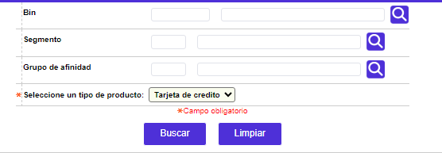
El formulario contiene las opciones Actualizar, Eliminar, Adicionar y Detalle.
Adicionar: Si el usuario invoca la opción Adicionar se despliega un wizard de tres pasos.
La primera página del wizard se encuentra dividida en tres bloques de datos (datos generales, saldo a favor y datos funcionales) y contiene los siguientes campos.
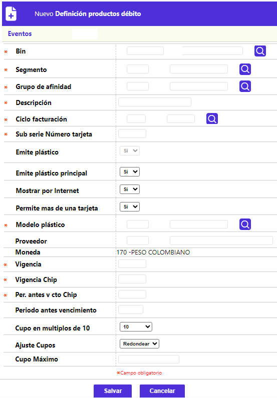
Descripción de campos
| Bin |
Campo obligatorio con lista de valores de la cual se selecciona el bin o prefijo con el cual se va a crear el nuevo producto. |
| Producto |
Este campo obligatorio contiene lista de valores de la cual se selecciona el producto o segmento que va a conformar el nuevo producto. |
|
Grupo de afinidad |
Campo obligatorio con lista de valores de la cual se selecciona el grupo de afinidad que junto con el bin y el segmento van a conformar el nuevo producto. |
|
Descripción |
Este campo alfanumèrico de hasta 30 caracteres, obligatorio, permite registrar el nombre o descripción del nuevo producto a crear. |
|
Marca |
Campo de salida que a partir del bin despliega la marca o franquicia a la cual pertenece el producto a crear. |
|
Código medio de pago |
Este campo obligatorio cuenta con lista de valores para seleccionar el tipo de medio de pago a que corresponde el producto a crear. |
|
Ciclo de facturación |
Campo obligatorio con lista de valores de la cual se selecciona el ciclo de facturación que por defecto van a tener todas las tarjetas asociadas con el nuevo producto. |
|
Vigencia |
En este campo numúrico de hasta dos dígitos, obligatorio, se registra la cantidad de meses de vigencia que van a tener las tarjetas pertenecientes al nuevo producto. |
|
Subserie número de tarjeta |
Campo obligatorio de hasta tres dígitos que permite registrar un valor fijo que de acuerdo con lo definido por la entidad puede o no hacer parte del número de la tarjeta. |
|
Moneda usada en parámetros |
Este campo obligatorio contiene lista de valores para seleccionar la moneda en la cual se expresaràn los sobrecupos, saldos de la deuda y mora de las tarjetas pertenecientes al nuevo producto, asì como Otros cargos generados. |
|
Cupo en múltiplos de |
Campo obligatorio tipo combo del cual se puede seleccionar la manera como se calcular y otorgar el cupo del producto en el proceso de aumento masivo de cupos. |
|
Ajuste cupos |
Este campo obligatorio tipo combo permite seleccionar entre Truncar y Redondear, la acción que debe tener en cuenta el sistema para ajustar los cupos calculados en el proceso de aumento masivo de cupos, a partir del múltiplo seleccionado en el campo anterior. |
|
Cupo máximo |
Campo numérico de hasta 14 enteros y 2 decimales en el cual se registra el valor del cupo máximo que puede llegar a tener cualquier tarjeta perteneciente al nuevo producto. |
|
Dìas gracia abonos |
Este campo numèrico obligatorio permite registrar la cantidad de dìas que tiene el cliente para efectuar el pago mínimo de su producto sin que le sean liquidados intereses de mora. |
|
Tipo producto |
Campo obligatorio que contiene un combo con las opciones Personal y Empresarial para indicar el tipo de cliente al cual está dirigido el nuevo producto (persona natural o jurìdica). Este campo permite por ejemplo que un mismo bin se puede utilizar para crear productos empresariales y personales al mismo tiempo. |
|
Manejo saldo a favor |
Campo obligatorio tipo combo, que contiene como única opción Crear transacción de saldo a favor para indicarle al sistema que cada vez que se genere un saldo a favor y este sea aplicado, se debe generar una transacción para mostrarle al cliente en el extracto y formalizar asì dicho saldo. |
|
Definición saldo a favor |
Este campo obligatorio tipo combo permite seleccionar entre Exceso sobre el pago mínimo o Exceso sobre el pago total la forma en que el sistema debe interpretar los pagos efectuados por el cliente para determinar si se genera o no un saldo a favor. |
|
Aplica para persona natural |
Campo obligatorio tipo combo, en el cual se puede seleccionar entre Exclusivo empleado corporación, Exclusivo no empleado corporación o Todos el tipo de cliente persona natural a quien va dirigido el producto, de acuerdo con la categoría a la cual pertenece el cliente. |
|
Exige avalista |
Campo obligatorio tipo combo del cual puede seleccionarse entre No exige avalista, Avalista solo no raíz o vehículo o Exige avalista sin condiciones, la condición que deben cumplir los solicitantes de este producto; la opción Avalista solo no raíz o vehículo implica requerir avalista en el evento en que el solicitante no reporte información de si posee o no bien raíz o vehículo. |
|
Periodos dudoso recaudo |
Este campo numèrico de hasta dos dígitos, obligatorio, permite registrar la altura de mora a partir de la cual la obligación ya se considera de difícil cobro y se le debe aplicar el bloqueo correspondiente. |
La primera página del wizard contiene los hipervínculos Parámetros, Cuotas y Eventos con los cuales se invocan otros formularios en los que el usuario puede adicionar más parámetros para el nuevo producto. Si el usuario lo desea y por comodidad también, se sugiere adicionar inicialmente el producto diligenciando únicamente los campos obligatorios del wizard (páginas 1, 2 y 3) y posteriormente, una vez que el producto haya sido creado agregar la información en estos tres hipervínculos, invocando el botón actualizar. De todas maneras se recomienda al usuario tener presente que la información adicionada en los formularios parámetros, cuotas y eventos solo será guardada en la base de datos cuando desde la tercera página del wizard de nuevo producto se utilice el botón finalizar.
Una vez que el actor ha diligenciado todos los datos de la primera página del wizard, se puede desplazar a la segunda página denominada línea de crédito que contiene los siguientes campos.
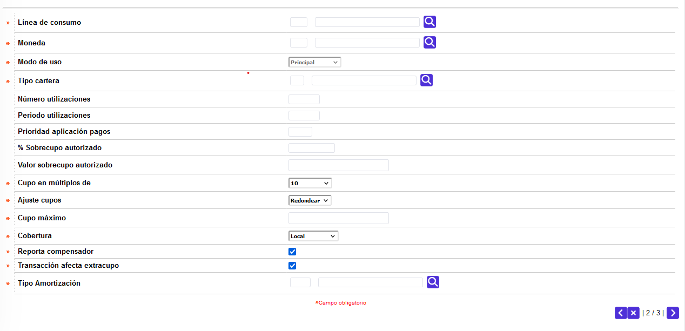
Descripción de campos
|
Línea de crédito |
Campo obligatorio con lista de valores de la cual se puede seleccionar la línea de crédito principal del producto. |
|
Moneda |
Este campo obligatorio contiene lista de valores de la cual se selecciona la moneda en la cual se encuentra denominada la línea de crédito a adicionar al nuevo producto. |
|
Modo de uso |
Campo de salida que muestra como ínico valor 'Principal' teniendo en cuenta que para crear el producto se requiere siempre que este tenga una línea principal. |
|
Tipo cartera |
Este campo obligatorio contiene lista de valores de donde se puede seleccionar el tipo de carteraal cual corresponde la línea de crédito asociada al nuevo producto, de acuerdo con las normas expedidas por el ente u organismo regulador. |
|
Número de utilizaciones |
Campo no obligatorio en el cual se registra el número de veces que la entidad permite utilizar la línea de crédito, en el lapso de tiempo específico definido en el siguiente campo. |
|
Periodo utilizaciones |
En este campo numérico no obligatorio se registra el número de periodos o facturaciones que se deben tener en cuenta al momento de validar el número de utilizaciones autorizadas por la entidad para la línea de crédito asociada al nuevo producto. |
|
Prioridad aplicación de pagos |
Campo numérico no obligatorio en el que se determina el orden o jerarquía asignado a la línea de crédito en caso de ser requerido de acuerdo con lo parametrizado por la entidad en la opción Prioridad aplicación de pagos. |
|
% Sobrecupo autorizado |
Este campo no obligatorio permite registrar el porcentaje calculado sobre el cupo de la línea asociada al nuevo producto, en que pueden excederse los consumos o utilizaciones efectuados. Es excluyente con el campo Valor sobrecupo autorizado |
|
Valor sobrecupo autorizado |
Campo mutuamente excluyente con el anterior y en el cual se indica el valor máximo en que pueden excederse los consumos o utilizaciones efectuados para la línea. Es un campo numérico de hasta 14 enteros y 2 decimales. |
|
Cupo en múltiplos de |
En este campo obligatorio tipo combo se indica la manera como se calculará y otorgará el cupo para la línea en el proceso de solicitud o asignación de los cupos para la misma. Al momento de asignarle valor a este campo se debe tener en cuenta la moneda en la cual está expresada la línea asociada al al nuevo producto por cuanto no es lo mismo asignarle y/o aumentarle a un cupo $10.000.00 que U$10.000.00. |
|
Ajuste cupos |
Campo obligatorio tipo combo en el cual se selecciona entre Truncar o Redondear, la manera en que el sistema debe hacer el ajuste de los cupos solicitados / asignados de acuerdo con el múltiplo indicado en el campo anterior.que indica la calificación externa de la tarjeta con la cual llegó la información procesada y registrada en la cuenta contable. |
|
Cupo máximo |
En este campo obligatorio de hasta 14 enteros y 2 decimales se registra el monto máximo que se le puede asignar como cupo a la línea asociada al nuevo producto. |
|
Cobertura |
Campo obligatorio tipo combo en el cual se selecciona entre Local o Internacional el uso permitido para la línea de crédito asociada al nuevo producto. |
|
Reporta compensador |
En este campo obligatorio tipo check se indica si dentro de los archivos de refresco enviados a las franquicias o compensadores se incluye o no el disponible de la línea; cuando no está marcado, significa que la entidad autoriza directamente las transacciones asociadas a la línea de crédito. |
|
Transacción afecta extracupo |
Campo obligatorio que indica si las transacciones asociadas a la línea de crédito afectan el extracupo de la tarjeta. |
Después de haber llenado todos los datos de la segunda página del wizard, se puede deplazar a la tercera y última página denominada transacciones asociadas que contiene un único campo.
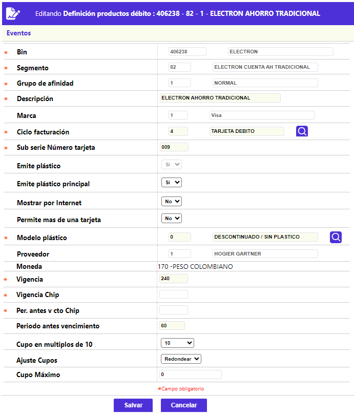
Descripción de campos
|
Transacción |
Campo obligatorio con lista de valores de la cual se puede seleccionar la transacción interna que va a ser asociada con la línea de crédito. Desde el punto de vista práctico, son las transacciones que están permitidas o autorizadas por la entidad para la línea de crédito asociada con el nuevo producto. |
Parámetros
:

Descripción de campos
|
Emite plástico |
En Este campo tipo check se indica si el producto debe emitir plástico como materialización de la tarjeta. Si este campo se deja sin marcar para indicar que NO emite plástico; al momento de definir los parámetros de solicitudes por producto, se debe tener la precaución de no asociar los tipos de solicitud Reposición crédito y Reexpedición crédito por cuanto éstas sólo aplican para productos que sí tengan asociado un plástico como materialización de la tarjeta. Así mismo, para los tipos de solicitud Nuevo crédito y Renovación crédito se debe tener en cuenta no asociar las etapas de plásticos (realce, sobreflex de empaque, sobreflex de clave, envío a mensajería, acuse recibo de entrega, control de inventario)que sólo tienen aplicabilidad para productos que SI emiten plástico. |
|
Emite plástico principal |
Campo tipo check en el que se indica si el producto debe emitir plástico como materialización de la tarjeta, para el titular principal. |
|
Genera clave |
En este campo tipo check se señala si para el nuevo producto se debe generar clave. |
|
Activo |
Campo tipo check que indica si el producto se encuentra activo para la entidad de manera que al invocar desde cualquier campo configurado para tal fin la lista de productos solo se muestran aquellos que tengan la condición de activos. |
|
Mostrar por internet |
En este campo se indica si el nuevo producto puede ser accesado a través de internet. |
|
Modelo de plástico |
Si se ha indicado que el producto SI emite plástico, este campo se convierte en obligatorio y contiene una lista de valores de la cual se selecciona el modelo de plástico se va a utilizar durante el proceso de realce de las tarjetas pertenecientes al nuevo producto. |
|
Proveedor |
Campo de salida que despliega el código y nombre del proveedor que suministra los plásticos para el realce de las tarjetas. |
|
Generar número acción |
Este campo tipo check permite indicar si el nuevo producto requiere un número de acción. En caso de estar marcado, durante el proceso de ingreso de la solicitud de nuevo crédito se deberá indicar el número de acción asociado a la tarjeta. |
|
Aplica pago por cuotas |
Campo tipo check en el que se indica si para el producto se maneja aplicación de pago por cuotas, como en el caso de aquellos productos de créditos rotativos y tarjetas de retail. |
|
Liquida interés parcial |
Este campo tipo check le permite a la entidad determinar si el sistema debe liquidar los interes desde la fecha de facturación hasta el momento en que se efectúa el pago por parte del cliente, o si la liquidación de éstos se debe hacer hasta la siguiente facturación. |
|
% Tolerancia pagos |
Campo numérico que permite definir la relación entre el pago efectuado y el saldo total de la deuda para generar intereses sobre los saldos pendientes. Si el cliente efectúa un pago total y al aplicarlo queda pendiente de cubrir un porcentaje de deuda menor o igual al parametrizado en este campo, el sistema no le cobrará al cliente los intereses correspondientes a esa porción. Este campo es mutuamente excluyente con el de valor tolerancia pagos. |
|
Valor tolerancia pagos |
Este campo numérico de hasta 14 enteros y 2 decimales permite definir para el nuevo producto el monto por el cual no se le cobrarán al cliente los intereses correspondientes sobre la diferencia entre el saldo de la deuda y el pago total efectuado. Es mutuamente excluyente con el campo % Tolerancia pagos. |
|
Vigencia tarjetas de emergencia |
Campo numérico de 1 dígito en el cual se registra el número de periodos durante los cuales el sistema aceptará como válida una tarjeta de emergenciapara el nuevo producto. |
|
Permite facturación en dólares |
Este campo tipo check permite señalar si para el nuevo producto es permitido facturar en dólares. |
|
Plazo días formalizar extravío |
Campo numérico en el cual se registra el número de días que como máximo tiene un cliente para formalizar el extravío de su tarjeta. |
|
Periodo traslado saldo moneda |
Este campo permite registrar para el nuevo producto la altura de mora a partir de la cual los saldos en dólares o moneda extranjera que presenta la tarjeta serán convertidos en su totalidad a la moneda local. |
|
CPS |
Campo con lista de valores de la cual se puede seleccionar la categoría o clasificación dada al nuevo producto y que servirá específicamente para la generación de reportes y estadísticas para las áreas comercial y de planeación. |
|
Programas comerciales |
Este campo contiene lista de valores de la cual se puede seleccionar el programa comercial que de acuerdo con sus características se ajuste más al nuevo producto. |
|
Número máximo tarjetas extendidas |
Campo numérico de hasta 4 dígitos en el cual se registra el número máximo de tarjetas extendidas que pueden depender de una misma tarjeta principal perteneciente al nuevo producto. |
|
Cupo mínimo tarjetas extendidas |
Este campo de hasta 14 enteros y 2 decimales permite a la entidad determinar el cupo mínimo que se debe solicitar / asignar para cada una de las tarjetas dependientes que sean solicitadas. |
|
% Otros costos amparados |
Campo en el que se registra el porcentaje que la entidad cobrará a las tarjetas amparadas por concepto de cuota de manejo, seguro y afiliación, calculado sobre el valor liquidado al tarjetahabiente principal del cual dependen. |
|
Suma adicional influye cupo principal |
Este campo tipo combo permite seleccionar entre Si o No el cupo del nuevo producto será distribuido entre la tarjeta principal y todas las tarjetas que dependan de ella. Al elegir la opción Si, significa que el cupo total del producto será distribuido entre la tarjeta principal y sus dependientes, de forma que el cupo de cada tarjeta es independiente y no afecta el de las demás, por cuanto el monto límite a distribuir es el cupo global aprobado. Por el contrario, al seleccionar No, la tarjeta principal comparte el cupo con todos sus dependientes y cualquiera de ellos puede utilizar el cupo global disponible, afectando así el cupo que pueden usar las demás. Si este campo se encuentra en blanco, el sistema evaluará lo que se indique para el campo del mismo nombre en la opción parámetros operativos |
|
Capitaliza intereses |
Campo tipo combo que permite seleccionar entre Corriente, Moratorio, Ambos o No que tipo de intereses van a ser capitalizados para el cálculo del pago mínimo de las tarjetas pertenecientes al nuevo producto. |
|
Transacción capitaliza intereses |
Si en el campo anterior se ha seleccionado una opción diferente a No, este campo se convierte en obligatorio y permite seleccionar de la lista de valores la transacción interna mediante la cual se va formalizar la capitalización de los intereses. |
|
Cálculo pago mínimo |
Este campo tipo combo permite seleccionar entre Transacciones, Revolvente variable o Revolvente fijo el esquema de amortización que se va a aplicar para las tarjetas del nuevo producto con el fin de poder calcular el pago mínimo. Si la elección es Transacciones o Nulo el sistema realizará dicho cálculo basado en la parametrización realizada, por transacción, en la opción Transacciones por empresa. Si se señala un plan de cálculo diferente, éste prevalerecerá a lo señalado a nivel de transacción. |
|
Número cuotas revolventes |
Si en el campo anterior se ha seleccionado Revolvente fijo o Revolvente variable, este campo se convierte en obligatorio y en él se registra el número de cuotas en las que por defecto se va a diferir el saldo del cliente. |
|
Indicador económico |
Campo que se vuelve obligatorio cuando el tipo de amortización es Revolvente fijo o Revolvente variable y contiene una lista de valores de la cual se puede seleccionar el indicador económico a utilizar por defecto para liquidar los intereses corrientes. |
|
Mensaje extracto |
Este campo contiene lista de valores de la cual se selecciona el mensaje a incluir en los extractos de las tarjetas pertenecientes al nuevo producto. |
|
# Líneas extracto |
Campo numérico de hasta dos dígitos en el cual se registra para el nuevo producto el número de líneas que se dispone por cada hoja para relacionar las transacciones a mostrar al cliente. |
|
Información extracto |
Este campo contiene una lista de valores de la cual se selecciona entre Sin transacciones, Transacciones del mes o Transacciones activas. La opción correspondiente al nivel de detalle que se presentará en el informe periódico del cliente. |
Los restantes bloques de datos del formulario de Parámetros contienen los siguientes campos:
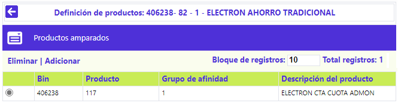
Descripción de campos
|
Afecta disponible |
Campo que contiene una lista de valores de la cual se selecciona entre Aplicar afectando disponible o Aplicar sin afectar disponible la manera en que se verá afectado el disponible de la tarjeta por el saldo a favor generado. |
|
Porcentaje (Bloqueo por sobrecupo) |
En este campo se indica el porcentaje a partir del cual se bloqueará la tarjeta por efecto del uso del sobrecupo autorizado para el nuevo producto. |
|
Valor (Bloqueo por sobrecupo) |
Campo de hasta 14 enteros y 2 decimales en el cual se registra el valor del sobrecupo utilizado a partir del cual será bloqueada la tarjeta. |
|
Valor (Bloqueo por mora) |
En este campo numérico de 14 enteros y 2 decimales se indica el valor del capital en mora que presenta la tarjeta, a partir del cual será bloqueada. |
|
Periodos (Bloqueo por mora) |
Campo numérico de 3 dígitos en el cual se indica la altura de mora a partir de la cual la tarjeta será bloqueada por mora. |
|
Valor (Cancelación por mal manejo mora) |
En este campo numérico de 14 enteros y 2 decimales en el que se indica el valor mínimo del capital en mora que debe presentar la tarjeta en los periodos indicados en el campo siguientes para ser cancelada por mal manejo. |
|
Periodos (Cancelación por mal manejo mora) |
Campo en el que se indica la cantidad de periodos en mora que como mínimo debe tener la tarjeta para que junto con el monto en mora indicado en el campo anterior sea cancelada por mal manejo. |
|
Valor mínimo |
En este campo de hasta 14 enteros y 2 decimales se registra el monto a partir del cual se aplicará un bloqueo preventivo a la tarjeta por no efectuar el pago oportunamente. |
|
Días después |
Campo en el que se indica el número máximo de días calendario que la entidad otorga, a manera de gracia, después de la fecha límite para que el cliente efectúe el pago y a partir de la cual se genera el bloqueo preventivo sobre la tarjeta. |
|
Días a vencer CDT |
Este campo permite registrar el número de días faltantes para el vencimiento del CDT que garantiza una tarjeta, a fin que el sistema aplique un bloqueo preventivo sobre la misma hasta tanto se haga la renovación del CDT. |
|
Valor aceleración deuda |
Campo numérico de hasta 14 enteros y dos decimales en el cual se define el monto de la deuda a partir de la cual ésta se hace exigible en su totalidad, siempre y cuando la obligación alcance también la cantidad de periodos en mora requeridos parametrizada en el siguiente campo. |
|
Periodos para acelerar deuda |
En este campo se registra el número de periodos en mora que debe alcanzar la tarjeta para que conjuntamente con el valor parametrizado en el campo anterior la obligación se haga exigible en su totalidad. |
|
Periodos de dudoso a castigo |
Campo numérico de 3 dígitos en el cual se registra el número de periodos que debe transcurrir desde el momento en que la deuda se considera de dudoso recaudo para que pase a ser una deuda incobrable y sea asumida por la entidad. |
|
Valor débito |
Este campo numérico de 14 enteros y 2 decimales permite registrar el valor máximo de los saldos de naturaleza débito que pueden ser trasladados contablemente para dejar los saldos de la tarjeta en ceros. |
|
Valor crédito |
Campo numérico de 14 enteros y 2 decimales que permite registrar el valor máximo de los saldos de naturaleza crédito que pueden ser trasladados contablemente para dejar los saldos de la tarjeta en ceros. |
|
Convenio |
Este campo contiene lista de valores de la cual se puede seleccionar el convenio que se desea asociar al producto de acuerdo con las características del nuevo producto. |
|
Altura mora aval |
Campo numérico de hasta 4 dígitos en el cual se indica la altura de mora a partir de la cual el convenio asume las obligaciones de las tarjetas avaladas por él con cargo a la cuenta corriente o de ahorro. |
|
CDT garantiza el crédito |
Este campo tipo check permite indicar si el producto requiere ser garantizado mediante un CDT como pre requisito para poder ser otorgado al cliente. |
|
% CDT para tarjeta principal |
Campo en el cual se indica el porcentaje que aplicado sobre el valor del CDT dado en garantía el sistema utilizará como base para calcular el cupo a asignar a la tarjeta. |
|
Valor mínimo CDT |
Este campo de hasta 14 enteros y 2 decimales permite a la entidad determinar el monto mínimo por el cual se debe expedir el CDT que garantiza la obligación para que éste sea aceptado como respaldo. |
El formulario de Parámetros contiene el globo de localización que invoca otro formulario desde el cual es posible diligenciar datos relativos al manejo de centrales de riesgo para el nuevo producto.
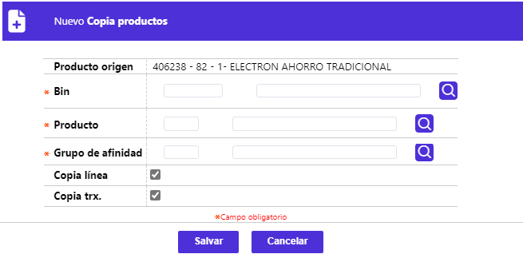
Descripción de campos
|
Periodos central de riesgos |
Campo numérico de 1 dígito en el cual se registra la cantidad de periodos que el sistema debe tomar en cuenta hacia atrás para reportar la información sobre el comportamiento y la calificación del cliente a las diferentes centrales de riesgo. |
|
Reporta Cifin |
En este campo tipo combo se puede seleccionar entre Si o No la información de las tarjetas pertenecientes al nuevo producto se debe reportar a la central de riesgo Cifín en las interfaces correspondientes. |
|
Reporta Datacrédito |
Campo tipo combo que permite indicar Si o No la información de las tarjetas pertenecientes al nuevo producto se debe reportar a la central de riesgo Datacrédito en las interfaces correspondientes. |
Cuotas : Si desde la primera página del wizard de nuevo producto el usuario invoca el hipervínculo Cuotas se despliega un nuevo formulario que le permite a la entidad definir los parámetros necesarios para el cobro de las cuotas de afiliación, manejo y seguro que se van a cobrar para el nuevo producto. Por defecto, al ingresar a la opción se despliega en el formulario de cuota de manejo pero el usuario se puede mover mediante las flechas de desplazamiento a cualquiera de los otros dos formularios.
Los campos desplegados en cualquiera de estos formularios son los mismos por lo cual los campos se explican una sola vez.
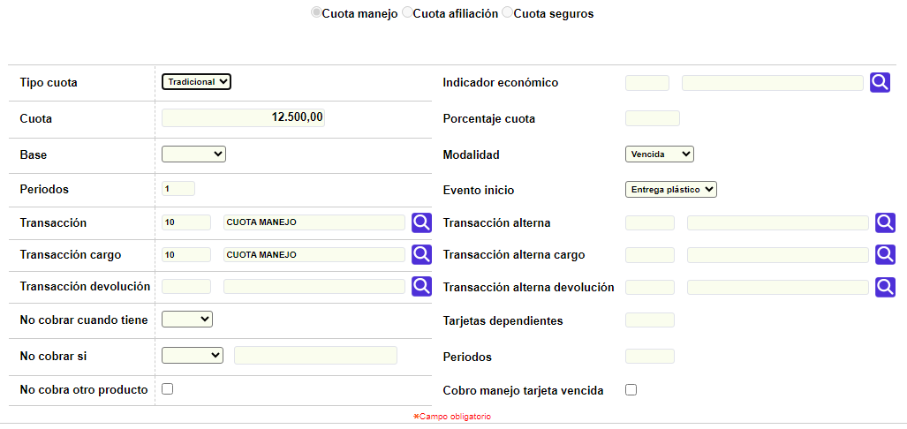
Descripción de campos
|
Tipo cuota |
Campo tipo combo en el cual se puede seleccionar entre Tradicional o Porcentual el tipo de cuota que se está parametrizando para el nuevo producto. Tradicional le indica al sistema que debe cobrar el monto definido en el campo Cuota, mientras que en Porcentualel sistema tendrá en cuenta lo definido en el campo No cobrar si, para aplicar o no el valor del indicador económico seleccionado en el siguiente campo. |
|
Indicador económico |
Si el tipo cuota se define como porcentual, en este campo se determina el Indicador económico que el sistema debe utilizar para calcular el valor de la cuota. |
|
Cuota |
Este campo de hasta 14 enteros y 2 decimales se registra el valor a cobrar por concepto de cuota para las tarjetas pertenecientes al nuevo producto. |
|
Porcentaje cuota |
Campo numérico en el que se indica el porcentaje que aplicado sobre el concepto seleccionado en el campo 'Base' servirá al sistema para calcular el valor de la cuota a cobrar. Este campo es excluyente con el de 'Cuota' es decir que solo uno de los dos debe ser diligenciado. |
|
Base |
En este campo tipo combo se selecciona entre Cupo y Promedio> (de los últimos doce meses) el concepto que servirá de base para aplicarle el porcentaje definido en el campo anterior y calcular el valor de la cuota a cobrar. Solo se debe diligenciar si el campo Porcentaje cuota tiene algún valor. |
|
Modalidad |
Campo tipo combo que le permite a la entidad seleccionar entre anticipada o vencida la manera como será cobrada la cuota para las tarjetas del nuevo producto. |
Periodos |
En este campo numérico que admite valores entre 1 y 12, se indica la cantidad de periodos que determina la frecuencia con la cual se va a efectuar el cobro de la cuota para las tarjetas pertenecientes al nuevo producto. |
|
Evento inicio |
Campo tipo combo en el que se selecciona entre Facturación, Entrega plástico o Utilización el evento que al producirse va a generar el inicio del cobro de la cuota para la tarjeta. |
|
Transacción |
En este campo con lista de valores se selecciona la transacción interna con la cual se va a registrar el cobro de la cuota en caso que se cumplan las condiciones para generar dicha cuota. |
|
Transacción alterna |
Campo con lista de valores que permite seleccionar la transacción interna que se va a generar para el cobro de la cuota en caso de presentarse consumos en el exterior. |
|
Transacción cargo |
Si la modalidad se ha definido como Vencida y el producto es cancelado o devuelto por el cliente antes de cumplir los periodos para el cobro de la cuota respectiva, en este campo que contiene lista de valores se selecciona la transacción interna mediante la cual se le va cargar al cliente el valor proporcional de la cuota liquidada desde la fecha del último cobro hasta el momento de la cancelación. |
|
Transacción alterna cargo |
Campo con lista de valores que permite seleccionar la transacción interna que se va a generar para el cobro proporcional de la cuota vencida cuando la tarjeta sea cancelada antes de cumplirse los periodos para el cobro de la cuota y se hayan presentado consumos en el exterior. |
|
Transacción devolución |
Si la modalidad se ha definido como Anticipada y el producto es cancelado o devuelto por el cliente antes de que se causen los periodos cobrados, en este campo que contiene lista de valores se selecciona la transacción interna mediante la cual se le va hacer reintegro o devolución al cliente del valor proporcional de la cuota liquidada desde la fecha de la cancelación hasta el final del periodo ya cobrado. |
|
Transacción alterna devolución |
Campo con lista de valores que permite seleccionar la transacción interna que se va a generar para la devolución proporcional de la cuota anticipada cuando la tarjeta sea cancelada antes de haberse causado los periodos cobrados y se hayan presentado consumos en el exterior. |
|
No cobrar cuando tiene |
En este campo tipo combo se puede seleccionar entre Menos o Mas para indicarle al sistema de acuerdo con el valor ingresado en el campo Tarjetas dependientes y cumplirse la condición, si debe o no cobrar cuota a la tarjeta principal. |
|
Tarjetas dependientes |
Campo complementario al anterior y en el cual se registra el número de tarjetas que el sistema tomará como base junto con la condición señalada para determinar si debe generar o no el cobro de la cuota para la tarjeta principal. |
|
No cobrar si |
Si el tipo de cuota es Porcentual, en este campo tipo combo se selecciona entre Saldo > a o Saldo < a, la condición que debe cumplir la tarjeta para que conjuntamente con el monto indicado en el campo adjunto y el número de periodos determinado en el campo siguiente el sistema determine si debe generar el cobro de la cuota y aplicar el indicador económico correspondiente para el cálculo de la misma. |
|
Periodos |
Este campo complementario del anterior permite indicar el número de periodos que el sistema debe evaluar para determinar si la tarjeta cumple con las condiciones para ser exonerada de cuota o si por el contrario se debe generar el cobro respectivo. |
|
No cobra otro producto |
Campo tipo check en el que se indica si en caso que el cliente posea otros productos con la entidad se le debe cobrar o no la cuota por las tarjetas que le sean otorgadas y pertenezcan al nuevo producto que se está parametrizando. |
Eventos : Si desde la primera página del wizard de nuevo producto el usuario invoca el hipervínculo Eventos se despliega un nuevo formulario que le permite a la entidad definir los parámetros necesarios para los diferentes eventos o tipos de solicitud que eventualmente es posible gestionar para el nuevo producto.
El formulario se encuentra estructurado en 8 bloques de datos, siendo los tres primeros Nuevos créditos, Aumento de cupo y Reposición> con los siguientes campos:
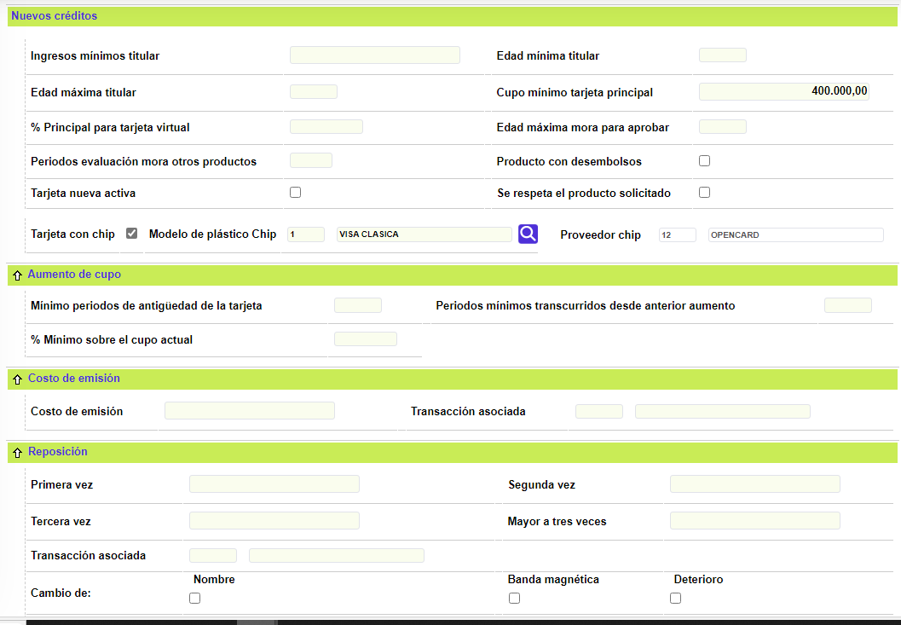
Descripción de campos
|
Ingresos mínimos titular |
Campo numérico de hasta 14 enteros y 2 decimales en el que se registra el ingreso mínimo mensual que debe reportar el cliente para que su solicitud avance normalmente por las diferentes etapas parametrizadas y poderle otorgar una tarjeta perteneciente al nuevo producto. |
|
Edad mínima titular |
En este campo numérico de 2 dígitos se registra la edad mínima que debe tener el cliente para poder solicitar una tarjeta perteneciente a este producto. |
|
Edad máxima titular |
Campo numérico de 2 dígitos en el que se indica la edad máxima que puede tener el cliente para solicitar una tarjeta perteneciente a este producto. |
|
Cupo mínimo tarjeta principal |
En este campo numérico de 14 enteros y 2 decimales se registra el valor mínimo a asignar como cupo a una tarjeta principal perteneciente al producto. |
|
% Principal para tarjeta virtual |
Si el producto que se está creando corresponde al tipo virtual, en este campo se registra el porcentaje máximo que sobre el cupo de la tarjeta principal de la cual va a depender la virtual se debe tomar como base para calcular el cupo de la tarjeta virtual. Si el producto no es virtual, este campo se debe dejar en blanco. |
|
Edad máxima mora para aprobar |
Campo numérico de hasta 2 dígitos en el cual se registra la máxima altura de mora que el cliente puede presentar en la cantidad de períodos señalados en el campo siguiente, con el fin de que la solicitud de nuevos productos pueda ser procesada y aprobada. |
|
Periodos evaluación mora otros productos |
En este campo numérico de hasta 2 dígitos se indica la cantidad de períodos que el sistema debe tener en cuenta para evaluar la altura de mora del cliente indicada en el campo anterior y poder aprobar las solicitudes de nuevos productos. |
|
Producto con desembolsos |
Campo tipo check en el cual se señala si el producto maneja desembolsos y en consecuencia requiere un número de cuenta al momento de ingresar la solicitud. |
|
Tarjeta con chip |
En este campo tipo check se indica si el plástico emitido como materialización del producto incorpora un chip con la información pertinente. |
|
Tarjeta nueva activa |
Campo tipo check que indica si una vez emitida la tarjeta esta sale sin ningún bloqueo y lista para su uso o si por el contrario debe salir con bloqueo al despacho y esperar el proceso normal establecido por la entidad para el desbloqueo de la misma. |
|
Se respeta el producto solicitado |
En este campo se indica si durante el proceso de asignación de los cupos y aprobación de la solicitud se debe respetar el producto que el cliente solicitó inicialmente o si el sistema puede evaluar y modificar, con base en el cupo aprobado calculado para la tarjeta, el producto que se le debe asignar al cliente. |
|
Mínimo periodos de antigüedad de la tarjeta |
Campo numérico de 2 dígitos en el que se indica la cantidad mínima de meses que la tarjeta debe tener de antigüedad para poder efectuar una solicitud de aumento de cupo o incluirla dentro de un proceso de aumento masivo de cupos. |
|
Periodos mínimos transcurridos desde anterior aumento |
En este campo numérico de 2 dígitos se indica la cantidad de periodos (meses) que deben haber transcurrido desde el último aumento de cupo efectuado a la tarjeta para poder hacer una solicitud individual de aumento de cupo o incluirla en un proceso de aumento masivo de cupos. Si la tarjeta no ha tenido ningún aumento, se evalúa como última fecha de incremento la de aprobación de la solicitud del nuevo crédito con la cual se creó la tarjeta. |
% Mínimo sobre el cupo actual |
Campo numérico de 3 enteros y 2 decimales que, permite a la entidad registrar el valor porcentual calculado sobre el monto del cupo actual, que como mínimo deberá incrementar el sistema al efectuarse el proceso de aumento masivo |
Reposición Primera vez / Segunda vez / Tercera vez / Mayor a tres veces |
En estos campos numéricos de 14 enteros y 2 decimales, se registran respectivamente los montos que la entidad cobrará al cliente cada vez que se haga una reposición de la tarjeta, acorde con la frecuencia o cantidad de veces que este evento se haya presentado. |
|
Transacción asociada |
Si cualquiera de los campos anteriores contiene un valor, este campo se convierte en obligatorio y en él se selecciona de la lista de valores la transacción interna que se va a generar cuando se cumplan las condiciones para generar cobro por el evento. |
|
Cambio de nombre / Banda magnética / Deterioro |
En estos campos tipo check se marcan aquellas causales por los cuales la entidad va a generar cobro al cliente en caso de presentarse el evento de reposición del plástico. |
|
Calcula fecha de vencimiento |
Campo tipo check en el que se indica al sistema si dentro del proceso de reposición se debe calcular una nueva fecha de vencimiento para la tarjeta, teniendo en cuenta lo indicado en el parámetro número periodos antes del vencimiento contenido en este mismo formulario. Si el campo número de periodos es nulo, el sistema siempre calculará y actualizará la nueva fecha de vencimiento para la tarjeta con base en la vigencia definida para el producto. |
|
Genera número de tarjeta |
En este campo se señala si como resultado del evento de reposición se debe generar un nuevo número de tarjeta. |
Reposición activa: Campo tipo check en el que se indica si como resultado de la reposición del plástico este sale sin ningún bloqueo y listo para su uso o si por el contrario debe salir con bloqueo al despacho y esperar el proceso normal establecido por la entidad para el desbloqueo de la tarjeta.
Los otros 5 bloques de datos del formulario Eventos contienen los siguientes campos:
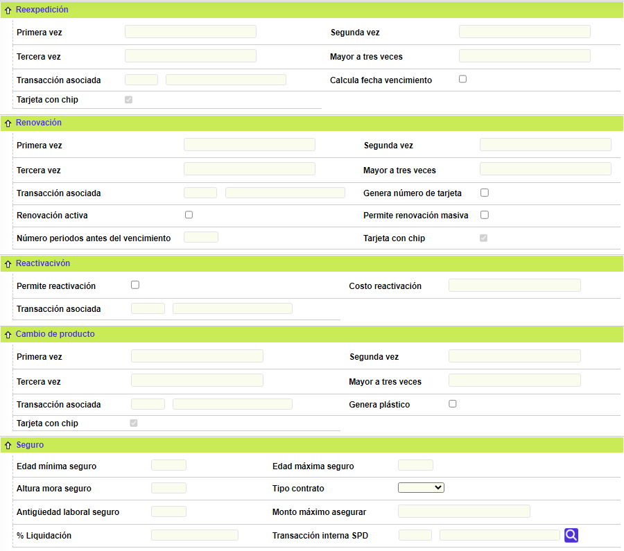
Descripción de campos
|
Reexpedición Primera vez / Segunda vez / Tercera vez / Mayor a tres veces |
En estos campos numéricos de 14 enteros y 2 decimales, se registran respectivamente los montos que la entidad cobrará al cliente cada vez que se haga una reexpedición de la tarjeta, acorde con la frecuencia o cantidad de veces que este evento se haya presentado. |
|
Transacción asociada |
Si cualquiera de los campos anteriores contiene un valor, este campo se convierte en obligatorio y en él se selecciona de la lista de valores la transacción interna que se va a generar cuando se cumplan las condiciones para generar cobro por el evento de reexpedición. |
|
Calcula fecha de vencimiento |
Campo tipo check en el que se indica al sistema si dentro del proceso de reexpedición se debe calcular una nueva fecha de vencimiento para la tarjeta, teniendo en cuenta lo indicado en el parámetro número periodos antes del vencimiento contenido en este mismo formulario. Si el campo número de periodos es nulo, el sistema siempre calculará y actualizará la nueva fecha de vencimiento para la tarjeta con base en la vigencia definida para el producto. |
|
Porcentaje cuota |
Campo numérico en el que se indica el porcentaje que aplicado sobre el concepto seleccionado en el campo 'Base' servirá al sistema para calcular el valor de la cuota a cobrar. Este campo es excluyente con el de 'Cuota' es decir que solo uno de los dos debe ser diligenciado. |
|
Renovación Primera vez / Segunda vez / Tercera vez / Mayor a tres veces |
En estos campos numéricos de 14 enteros y 2 decimales, se registran respectivamente los montos que la entidad cobrará al cliente cada vez que se haga una renovación de la tarjeta, acorde con la frecuencia o cantidad de veces que este evento se haya presentado. |
|
Transacción asociada |
Si cualquiera de los campos anteriores contiene un valor, este campo se convierte en obligatorio y en él se selecciona de la lista de valores la transacción interna que se va a generar cuando se cumplan las condiciones para generar cobro por el evento de renovación. |
|
Genera número de tarjeta |
En este campo se señala si como resultado del evento de renovación se debe generar un nuevo número de tarjeta. |
|
Reposición activa |
Campo tipo check en el que se indica si como resultado de la renovación de la tarjeta esta sale sin ningún bloqueo y lista para su uso o si por el contrario debe salir con bloqueo al despacho y esperar el proceso normal establecido por la entidad para el desbloqueo de la misma. |
|
Permite renovación masiva |
En este campo tipo check se señala si las tarjetas pertenecientes al producto pueden ser incluidas dentro de los procesos de renovación masiva que eventualmente adelanta la entidad. |
|
Campo en el que se registra la cantidad de periodos que el sistema debe evaluar con relación a la fecha actual de vencimiento de la tarjeta para determinar si debe o no hacer renovación automática de la fecha de vencimiento, específicamente cuando se están procesando solicitudes de reposición o reexpedición que tengan marcado el parámetro Calcula fecha de vencimiento. Para esto, el sistema determina la cantidad de periodos que le faltan a la tarjeta para su vencimiento con relación a la fecha actual y si es menor o igual al valor registrado en este campo calcula y actualiza la nueva fecha de vencimiento en el momento de aprobar la solicitud. |
|
|
Permite reactivación |
En este campo se indica si para el producto se permite o no el evento de reactivación de la tarjeta. |
|
Costo reactivación |
Campo numérico de 14 enteros y 2 decimales en el que se registra el costo a cobrar al cliente por concepto del evento de reactivación de la tarjeta. |
|
Transacción asociada |
Si el campo anterior contiene un valor, este campo se convierte en obligatorio y en él se selecciona de la lista de valores la transacción interna que se va a generar para el cobro por el evento de reactivación. |
|
Primera vez / Segunda vez / Tercera vez / Mayor a tres veces (Cambio de producto) |
En estos campos numéricos de 14 enteros y 2 decimales, se registran respectivamente los montos que la entidad cobrará al cliente cada vez que se haga un cambio de producto, acorde con la frecuencia o cantidad de veces que este evento se haya presentado. |
|
Transacción asociada |
Si cualquiera de los campos anteriores contiene un valor, este campo se convierte en obligatorio y en él se selecciona de la lista de valores la transacción interna que se va a generar cuando se cumplan las condiciones para generar cobro por el evento de cambio de producto. |
|
Genera plástico |
Campo en el que se indica si como resultado del proceso de cambio de producto se debe emitir un nuevo plástico. |
Seguro : el último bloque de datos del formulario Eventos, contiene la información requerida por el sistema para determinar los parámetros mediante los cuales se van a regir los cobros que la entidad debe hacer al cliente por concepto de seguros sobre los créditos otorgados. Aplica especialmente para la legislación norteamericana.
|
Edad mínima seguro |
En este campo numérico de 2 dígitos se registra la edad mínima que el cliente debe tener para poder adquirir la póliza de seguro de deudores. |
|
Edad máxima seguro |
Campo de 2 dígitos en el que se ingresa la edad máxima que el cliente debe tener para poder adquirir la póliza de seguro de deudores. |
|
Altura mora seguro |
En este campo numérico de dos dígitos se indica la altura de mora a partir de la cual se suspende el cobro de la cuota correspondiente a la póliza de seguro de vida de deudores, quedando la obligación sin el amparo respectivo. |
|
Tipo contrato |
Campo tipo combo en el cual se puede seleccionar entre Indefinido o Definido el tipo de contrato de trabajo que debe tener el cliente para poder ser elegible y adquirir la póliza de seguro de vida de deudores. |
|
Antigüedad laboral seguro |
En este campo numérico de 2 dígitos se registra la cantidad mínima de años de antigüedad laboral que el cliente debe tener para poder acceder al cubrimiento de la póliza de seguro de vida de deudores. |
|
Monto máximo asegurar |
Campo numérico de 14 enteros y 2 decimales en el que se registra el monto máximo cubierto por el seguro. |
|
% Liquidación |
En este campo se indica el porcentaje que sobre el saldo de la obligación se debe liquidar al cliente por concepto de la prima del seguro. |
|
Transacción interna SPD |
Si el campo anterior contiene algún valor, este campo se convierte en obligatorio y en él se selecciona de la lista de valores la transacción interna que se va a generar por concepto de la prima del seguro cobrada al cliente. |
Actualizar: si el usuario selecciona un registro e invoca la opción Actualizar, se despliega un formulario en el cual los únicos campos NO modificables son el Bin, Producto, Grupo de afinidad y Marca.
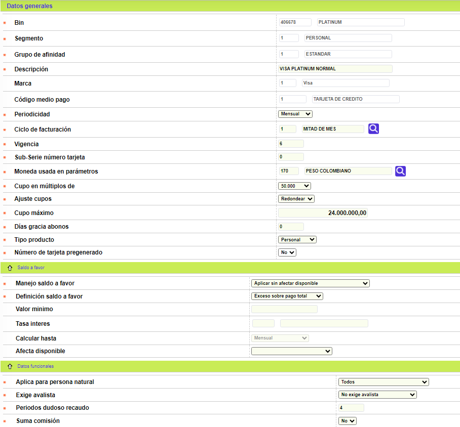
Este formulario, igual que sucede con el de adicionar, contiene los hipervínculos Parámetros, Cuotasy Eventos con los cuales se invocan los formularios que permiten actualizar cualquiera de los datos contenidos en estos formularios y cuya descripción se señaló anteriormente.
NOTA IMPORTANTE PARA LA ACTUALIZACIÓN DE DATOS : los formularios parámetros, cuotas y eventos solo tienen el botón Salvar, por lo cual una vez dentro del formulario las dos únicas maneras de salir son utilizando este botón para regresar a la página principal de definición de productos o invocando nuevamente la opción Definición de productos desde el menú. Si el usuario desea guardar los cambios efectuados, debe utilizar el botón Salvar para regresar a la página principal de Definición de productosy desde allí invocar nuevamente el botón Salvar, con lo cual se actualizarán en la base de datos todos los cambios hechos en cualquiera de los formularios. Si el usuario no desea guardar los cambios hechos en el formulario, al regresar a la página principal de Definición de productos debe utilizar el botón Cancelarcon lo que se perderán todos los datos que se hayan modificado en cualquiera de los formularios. En resumen, los cambios se guardan o se rechazan en bloque para todos los formularios y no para cada formulario en particular.
Si el usuario tiene duda respecto de si ha modificado datos o no, o definitivamente quiere tener la seguridad de no guardar ningún cambio efectuado se sugiere invocar nuevamente la opción desde el menú con lo cual el sistema desplegará otra vez el formulario de Definición de productos pero sin actualizar información en la base de datos.
Actualizar parámetros
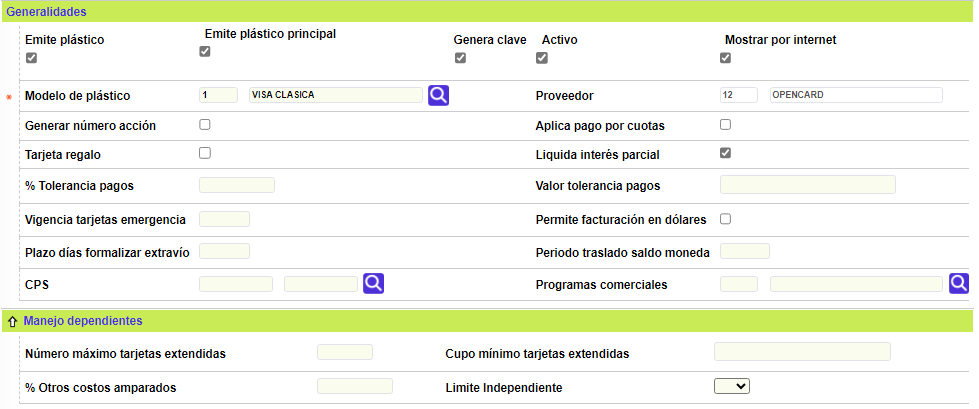
Actualizar cuotas
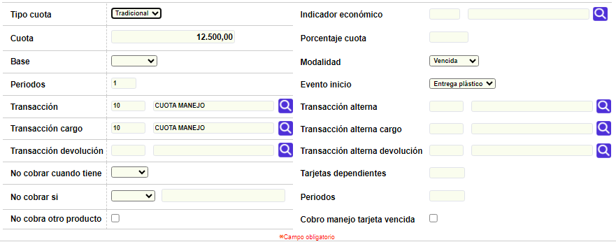
Actualizar eventos
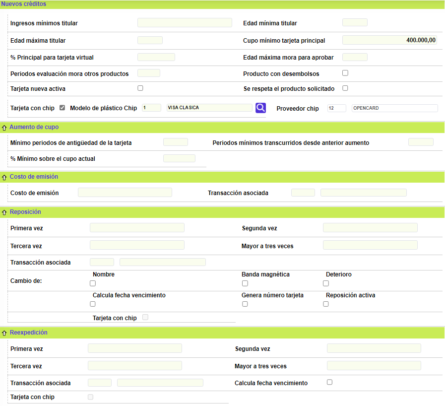
Detalle: si el usuario selecciona un registro e invoca la opción Detalle, se despliega un formulario en el cual ninguno de sus campos es modificable.
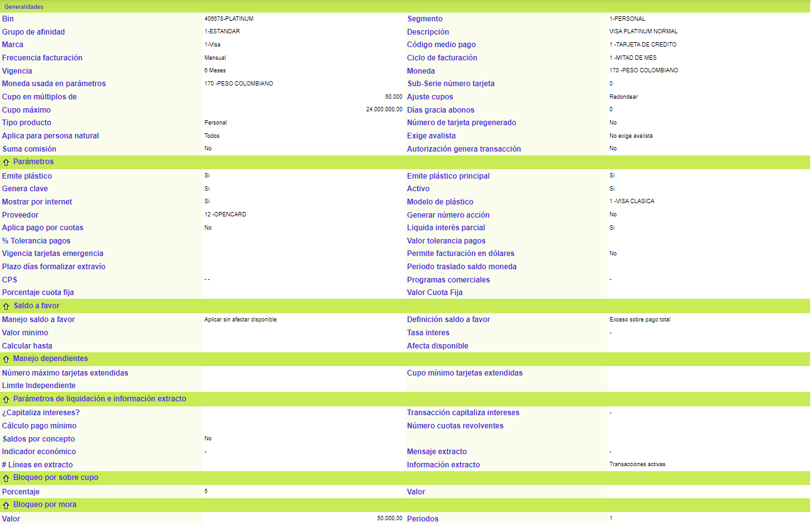
Este formulario contiene los hipervínculos cuotas y eventos que le permiten al usuario invocar los formularios correspondientes en los cuales ninguno de sus campos es modificable.
Detalle cuotas:
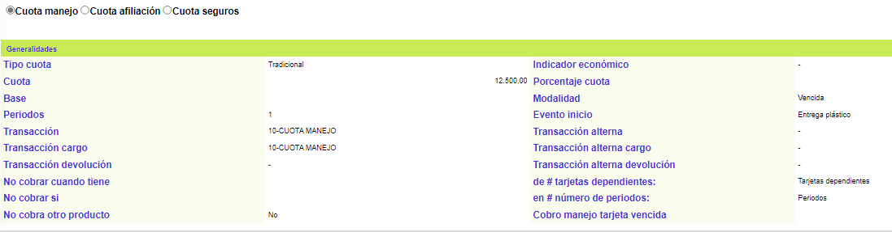
Detalle eventos:
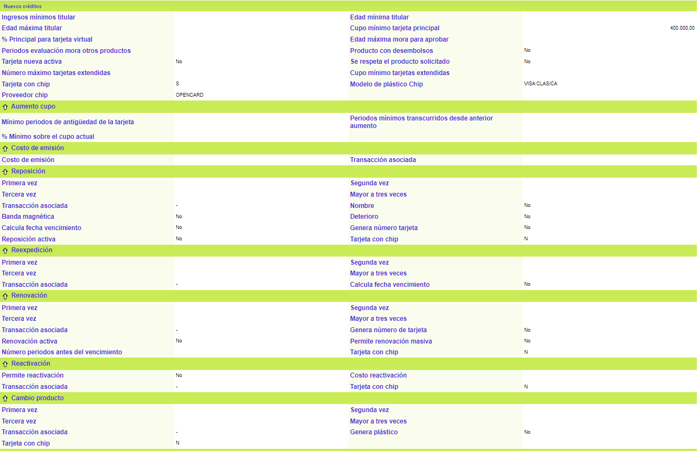